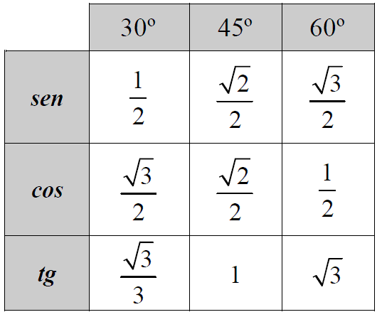
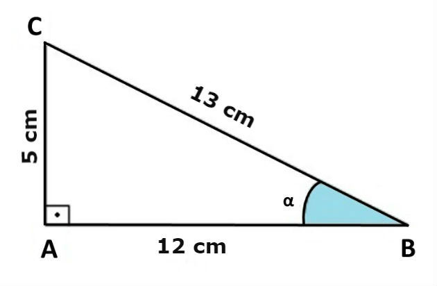
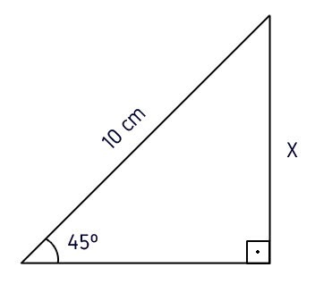

Seno, Cosseno e Tangente de um ângulo são relações entre os lados de um triângulo retângulo.
Essas relações são chamadas de razões trigonométricas, pois resultam da divisão entre as medidas dos seus lados.
O triângulo retângulo é aquele que apresenta um ângulo interno reto (igual a 90º). O lado oposto ao ângulo de 90º é
chamado de hipotenusa e os outros dois lados são chamados de catetos.
Os valores do seno, do cosseno e da tangente são calculados em relação a um determinado ângulo agudo do triângulo retângulo.
De acordo com a posição dos catetos em relação ao ângulo, ele pode ser oposto ou adjacente, conforme imagem abaixo:
É a razão entre a medida do cateto oposto ao ângulo agudo e a medida da hipotenusa de um triângulo retângulo.
Essa relação é calculada através da fórmula:
Sen α = Cateto Opostoposto/ Hipotenusa
É a razão entre a medida do cateto adjacente ao ângulo agudo e a medida da hipotenusa de um triângulo retângulo.
Essa relação é calculada através da fórmula:
Cos α = Cateto Adjacentedjacente / Hipotenusa
É a razão entre a medida do cateto oposto e a medida do cateto adjacente ao ângulo agudo de um triângulo retângulo.
Essa relação é calculada através da fórmula:
Tg α = Cateto Oposto / Cateto Adjacente
Na tabela trigonométrica consta o valor de cada razão trigonométrica para os ângulos de 1º a 90º.
Os ângulos de 30º, 45º e 60º são os mais usados nos cálculos e por isso, eles são chamados de ângulos notáveis.

Exemplos
1) Encontre os valores do seno, cosseno e tangente do ângulo α do triângulo abaixo.

Para encontrar os valores do seno, cosseno e tangente, devemos substituir a medida de cada lado do triângulo nas respectivas fórmulas.
Observando a imagem, identificamos que o cateto oposto mede 5 cm, o cateto adjacente mede 12 cm e a medida da hipotenusa é igual a 13 cm.
sen α = cateto oposto / hipotenusa = 5/13
sen α ≅ 0,384
cos α = cateto adjacente / hipotenusa = 12/13
cos α ≅ 0,923
tg α = cateto oposto / cateto adjacente = 5/12
tg α ≅ 0,416
2) Determine o valor de x na figura abaixo.

Observe que temos a medida da hipotenusa (10 cm) e queremos descobrir a medida de x, que é o cateto oposto ao ângulo de 45º.
Desta forma, aplicaremos a fórmula do seno.
De acordo com a tabela trigonométrica, o valor do seno de 45º
é aproximadamente igual a 0,7071. Assim:
sen 45° = x/10
0,7071 = x/10
x = 0,7071.10
x = 7,071
1) Um avião decola, percorrendo uma trajetória retilínea, formando com o solo um ângulo de 30° (suponha que a região sobrevoada pelo avião seja plana).
Depois de percorrer 1.000 metros, a altura atingida pelo avião, em metros, é:
2) Ao aproximar-se de uma ilha, o capitão de um navio avistou uma montanha e decidiu medir a sua altura. Ele mediu um ângulo de 30° na direção do seu cume. Depois de navegar mais 2 km em direção à montanha,
repetiu o procedimento, medindo um novo ângulo de 45°. Então, usando √3 = 1,73, qual o valor que mais se aproxima da altura dessa montanha, em quilômetros?
3) Quando o Sol se encontra a 45º acima do horizonte, uma árvore projeta sua sombra no chão com o comprimento de 15 m. Determine a altura dessa árvore:
4) Uma escada que mede 6m está apoiada em uma parede. Sabendo-se que ela forma com o solo um ângulo α e que
cos α = √5/3
a distância de seu ponto de apoio no solo até a parede, em metros, é:
1) O avião atingiu 500 m de altura.
2) A altura da montanha é de, aproximadamente, 2,7 quilômetros.
3) A altura dessa árvore é de 15 metros
4) A distância do ponto de apoio até a parede é de aproximadamente 2√5 metros.